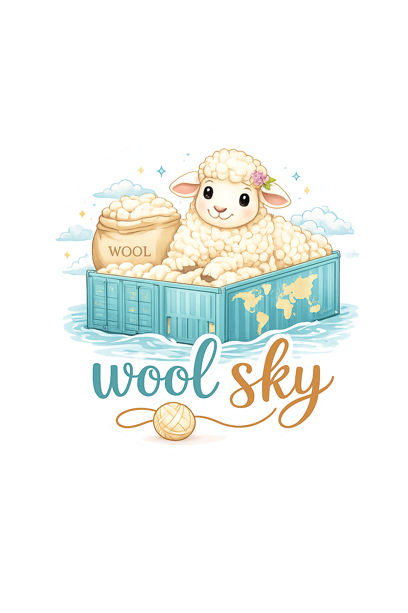
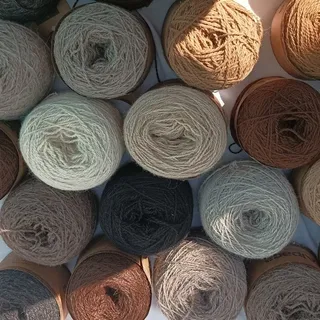
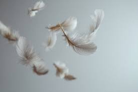
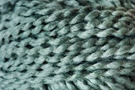
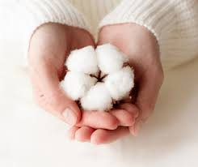
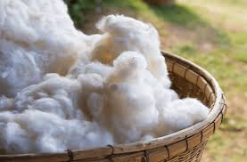

Calidad y producto que se siente
La lana merino premium es una fibra natural de alta calidad, reconocida a nivel internacional por su suavidad, ligereza y capacidad térmica. Proveniente de ovejas merino, este material ofrece un equilibrio perfecto entre confort, elegancia y funcionalidad. Gracias a sus propiedades transpirables y antibacterianas, la lana merino es ideal para la elaboración de prendas textiles que garantizan bienestar en cualquier clima, manteniendo el calor en invierno y frescura en verano. Es una opción sostenible, biodegradable y altamente duradera, diseñada para satisfacer los estándares más exigentes de la industria textil.

Elaborada a partir de lana merino auténtica, esta fibra 100% natural ofrece una experiencia pura, libre de materiales sintéticos y procesos agresivos. Su origen orgánico no solo garantiza mayor calidad, sino también una conexión directa con la naturaleza. Es la elección perfecta para quienes buscan un producto genuino, sostenible y alineado con un estilo de vida consciente.

Disfruta de una suavidad excepcional que se siente desde el primer contacto. A diferencia de otras fibras, la lana merino no irrita la piel y brinda una sensación ligera que acompaña cada movimiento. Ideal para usar durante todo el día, proporcionando comodidad continua sin sacrificar elegancia ni funcionalidad.

Diseñada para adaptarse a tu cuerpo, esta fibra inteligente regula la temperatura de forma natural. Conserva el calor en ambientes fríos y permite la liberación del exceso de calor en climas cálidos. Esto garantiza una experiencia equilibrada y confortable en cualquier situación o temporada.

Gracias a su estructura natural, permite una excelente circulación del aire, evitando la acumulación de humedad incluso en usos prolongados. Además, sus propiedades antibacterianas ayudan a prevenir la generación de olores, manteniendo una sensación de frescura, limpieza y bienestar durante más tiempo.

Comprometida con el medio ambiente, esta fibra es completamente biodegradable y se reintegra de forma natural al entorno al final de su ciclo de vida. Esto la convierte en una opción responsable que combina innovación, calidad y respeto por el planeta.
Somos una empresa dedicada a la importación y comercialización de lana merino de alta calidad proveniente de Nueva Zelanda. Seleccionamos cuidadosamente cada fibra bajo estándares internacionales, garantizando suavidad, resistencia y sostenibilidad. Conectamos la excelencia de la producción neozelandesa con el mercado mexicano, ofreciendo materiales textiles premium que responden a las necesidades actuales de calidad y desempeño.